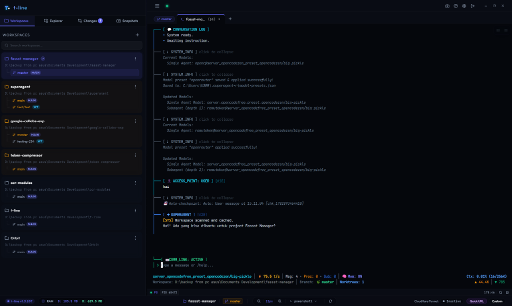

The Developer's Context-Switching Dashboard
Run GPU-accelerated multi-shell PTY terminals, orchestrate Git Worktrees with real-time dirty indices, browse code, and share workspaces via Cloudflare Tunnel. Built on Tauri v2 with under 100MB RAM footprint.

Streamlined Code Orchestration
Everything you need to eliminate cognitive load and build features faster in isolated workspaces.
SuperAgent AI Orchestration
100% server proxy integration with SuperAgent's HTTP & SSE engine (port 7888). Visualize multi-agent trees, inspect RMemory (L0/L1/L2), and approve tool requests.
- Real-time multi-agent execution DAGs
- Live RMemory context & short-term chat logs
- Interactive tool approval & plan validation
GPU Multi-Shell Terminals
Spawn concurrent terminal processes for PowerShell, CMD, Git Bash, or WSL. Features GPU canvas rendering for zero latency and smart paste warnings.
- GPU @xterm/addon-canvas rendering
- Windows WinPTY title resolution polling
- Recursive process tree teardown
Visual Git Worktrees
Adopt isolated branch directories without the CLI friction. Instantly flag modified or untracked changes with amber indicators.
- Real-time dirty branch indexing
- Dirty-first auto-sorting in sidebar
- Interactive branch sync layouts
Cloudflare Share Tunnel
Expose your local development dashboard securely. Built-in Access Control Loggers (ACL) allow you to block specific IPs and control connections.
- One-click workspace URL creation
- Secure WebSocket authorization gates
- Real-time incoming request loggers
Tauri v2 Native Wrappers
Lightweight Rust wrapper optimizing resources. Experience native system tray controls, close-to-tray states, and async multi-display stability.
- RAM footprint under 100MB
- Glassmorphic detached window tabs
- Single Instance lock & diagnostics
Zero-Stash Checkpoints
Take instant snapshots of changes and untracked files under Git-isolated refs (`refs/tline/checkpoints/*`) without polluting your git stash.
- Snapshot stage comparisons
- Monaco side-by-side diff viewers
- Safe local-first working states
SFTP Remote Mounts
Work on remote servers using standard openSSH engines. Sync checkpoints, list files, and spawn remote terminals automatically inside the panel.
- Standard ssh:// protocol mount links
- Integrated remote ssh -t terminal shells
- Remote git checkpoint integrations
Interactive Console Simulator
Click on the dashboard categories below to simulate how t-line manages your environments in real-time.
Technical Architecture Specs
Built using ultra-fast, robust, and modern developer technologies.
Installation & Quick Start
Get started in seconds by downloading pre-built installers or building from source.
🪟 Windows Setup (.exe / .msi)
Native 64-bit installer with WebGL xterm.js PTY support and automatic desktop shortcuts.
🍏 macOS (.dmg / .app)
Universal binary for Apple Silicon (M1/M2/M3) and Intel Macs with native menu bar tray integration.
🐧 Linux (.AppImage / .deb)
Self-contained AppImage and Debian package compatible with Ubuntu, Debian, Fedora, and Arch.
Developer Setup & Build from Source
Prerequisites: Bun 1.1+ (or Node 20+), Git, and Rust (for Tauri desktop builds).
# 1. Clone the repository
git clone https://github.com/RudyCity/t-line.git
cd t-line
# 2. Install workspace dependencies with Bun
bun install
# 3. Run backend Express (Port 3999) & React UI (Port 5773) concurrently
bun dev# 1. Launch SuperAgent server engine on port 7888
bunx superagent --server --multi
# 2. t-line auto-detects and connects via superAgentBridge.ts
# Express REST proxy available at: http://localhost:3999/api/superagent/*# Launch Tauri native client in development mode
bun run tauri# Package standalone desktop installers (.exe, .msi, .dmg, .AppImage)
bun run build:tauri